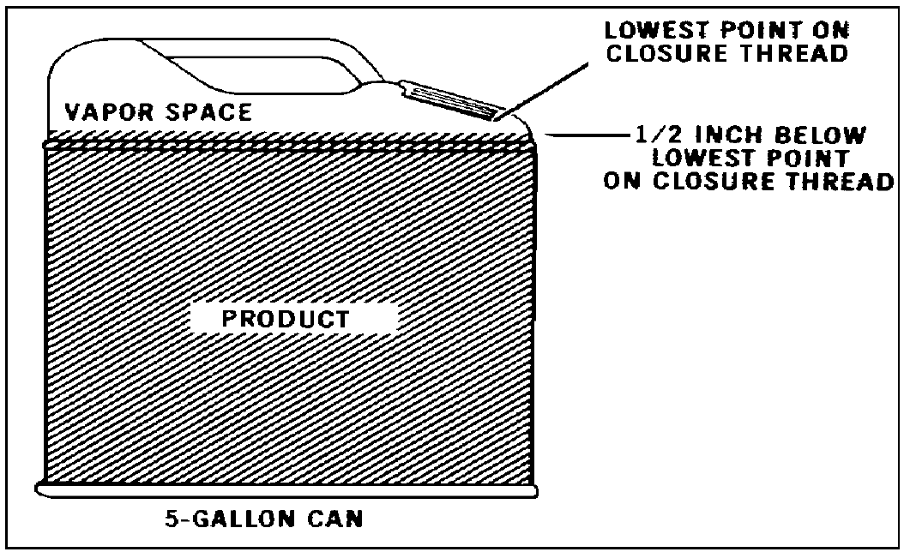
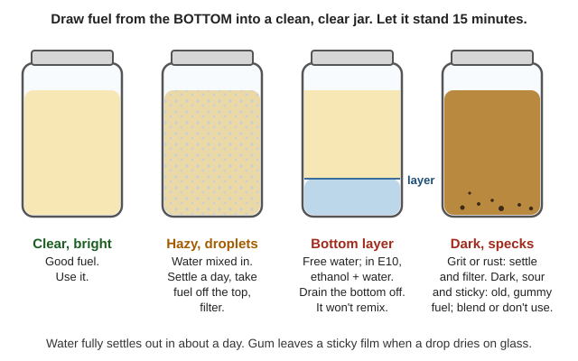
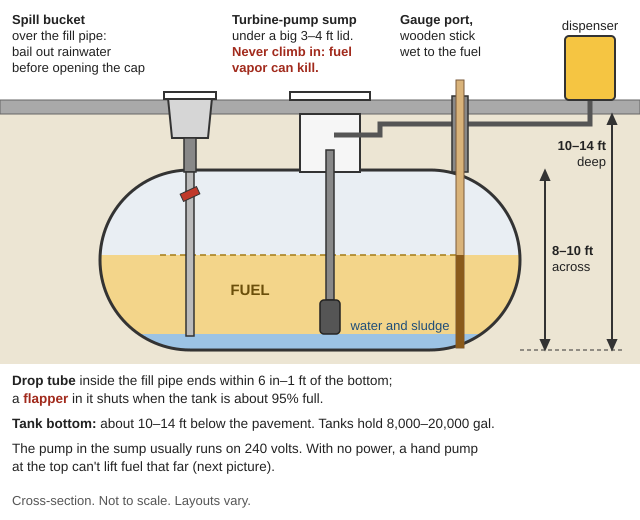
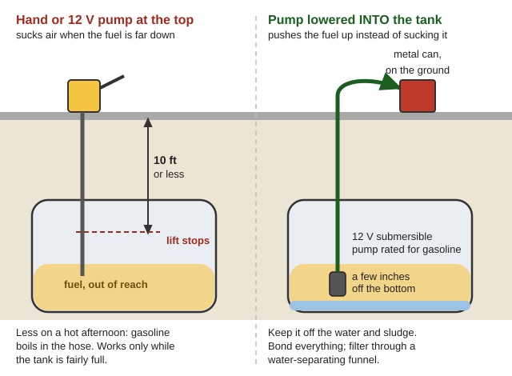
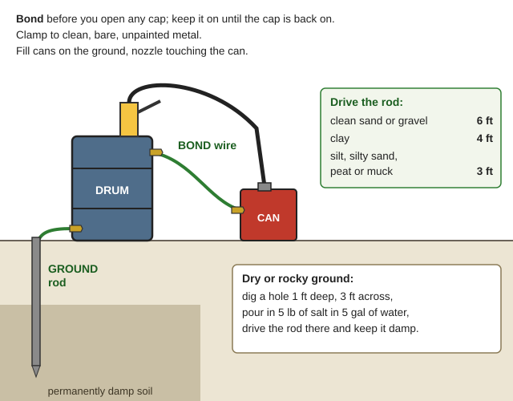

How long gasoline, diesel, kerosene and propane keep, how to tell when fuel has gone bad, what can be rescued, how to store fuel for the long haul — and how to get fuel out of gas-station underground tanks, drums and vehicles when there's no grid power. The manuals are in Fuel\ (Fuel-Quality-Storage, Station-Tanks-Pumping, Military-Fuel-Handling, Other-Fuels). Wood gas, biodiesel and alcohol fuel are in Homestead-Skills\Fuels.
⚠️ Rules that prevent fires and deaths
Gasoline vapor explodes. No flames, smoking or sparks within 50 feet of open fuel. Use only pumps made for gasoline — ordinary electric motors spark. (FM 10-67-1, p. 21)
Static sparks ignite fuel. Touch bare metal with your bare hand before opening any cap. Keep the nozzle touching the can or tank the whole time you pour. Fill portable cans on the ground, never in a truck bed or on carpet (rule of thumb). (FM 10-67-1, pp. 21–23)
Never put gasoline in a kerosene heater or lamp, and never store fuel inside the house.
Propane sinks into basements and ditches. Smell gas: put out flames, get out, close the tank valve if it's safe. (Texas RRC Propane Safety, p. 11)
Empty cans and drums are more dangerous than full ones — they are full of vapor. (FM 10-67-1, p. 14)
Fuel-soaked clothes can burst into flame from static when you pull them off. Wet them with water first, and never take off a jacket or sweater within 50 feet of open fuel. (FM 10-67-1, p. 23)
Stabilizer slows aging; it can't fix fuel that's already stale.
Diesel
6–12 months, years with care
Keep it clean, cool and dry; filter now and then, add stabilizer and biocide. (Alberta, p. 30)
Kerosene (1-K)
longer than gasoline (rule of thumb)
Keep in blue cans, sealed.
Propane
doesn't go bad
Can be stored indefinitely; the tank and valve are what wear out. (FEMA P-1019, p. 91)
Sources disagree on gasoline. Oklahoma Extension says not more than 60 days without stabilizer; Alberta says use it within a month but expect at least 6 months in a full, cool tank; Kansas State says ethanol blends last 90–100 days but straight gasoline "several years." Plan for the short end and test before you trust it. (BAE-1746, p. 2; Alberta, p. 30; K-State, p. 2 — linked in the table above.)
Storage that makes fuel last: fill containers nearly full (less air), keep them cool and out of the sun, use metal or approved cans with tight caps, add stabilizer the day you buy the fuel, label the date, and use the oldest first. Keep fuel outside living areas. (Army can and fill-level drawings; a well-planned farm fuel site)

Nearly full, but leave a little vapor space: the Army fills to ½ in below the lowest point of the filler thread (FM 10-67-1, p. 371).
Heat and sun cost you fuel. Alberta measured summer evaporation from 265-gallon above-ground gasoline tanks (Alberta, p. 13):
Tank
Lost per summer month
Dark tank in sun
3.2%
White tank in sun
1.9%
Dark tank in sun, pressure-vent cap
1.8%
White tank in sun, pressure-vent cap
1.0%
Dark tank in shade
0.8%
White tank in shade, pressure-vent cap
0.4%
Underground tank
less than 1 gallon (under 0.4%)
Illinois Valley summers are hot and dry, so paint tanks white and keep them in shade. Temperature swings also pull in moist air that condenses as water. (Alberta, pp. 12–13)
Plastic tanks are not suitable for above-ground bulk storage — sunlight through the walls feeds microbes and degrades fuel, and most aren't strong enough.
Don't store jerry cans in the house. Stand them in a plastic or rubber tub to catch drips.
Keep propane tanks and cylinders at least 6 metres (about 20 ft) from petroleum tanks. (separation-distance diagram)
A filter on a bulk tank's outlet should be about 10 microns — fine enough to stop rust, sand and lint. (photo)
Jar test: pour a sample from the bottom of the can or tank into a clean clear jar. Good fuel is clear and bright. Let it stand 15 minutes. Haze, droplets or a second layer at the bottom = water. Water fully settles out in about a day. (FM 10-67-2, p. 36; p. 97; Army samplers that reach the bottom)
Bad signs: darker color, a sour or varnish smell, or a drop on glass that leaves a sticky film when it dries (gum). Gum sticks valves and clogs carburetors.
E10 with a bottom layer has phase-separated (E10 blends): the bottom is ethanol plus water, not just water. E10 at 60 °F holds only about 4 teaspoons of water per gallon (3.8, to be exact) before this happens — less in the cold. Humid air rarely causes it; rain and water sitting in tanks do. (EPA phase-separation memo, p. 2; pp. 4–5)
What the jar tells you:
You see
It means
Do this
Clear and bright
Good fuel
Use it
Haze or tiny droplets
Water mixed in
Let it settle a day, take fuel off the top, filter
A separate bottom layer
Free water — or, in E10, ethanol + water
Drain the bottom off; see "Rescuing" below
Grit, rust or black specks
Dirt, rust or microbe slime
Settle, then filter through a fine filter
Dark, sour, sticky
Old, gummy fuel
Blend small amounts with fresh, or don't use

Sample from the bottom and let it stand: clear and bright is good; haze, a bottom layer, grit or a dark, sour look mean trouble (a diagram drawn for this guide).
The Army's field kit for these checks is pictured in FM 10-67-2, p. 47.
Water and dirt can be fixed: let the fuel settle a few hours to a day, then pour or siphon off the top (Siphon), leaving the bottom inch behind, and filter it. The Army lets gasoline and diesel settle at least 2 hours after a tank is filled; water drops out in about 24 hours.
Phase-separated E10: the layers won't remix. Drain off and discard the bottom layer. The top is weaker (lower-octane) gasoline — fine for lawn, farm and older carbureted engines.
Stale but clean gasoline:blend it with fresh. The Army mixes a small test batch ("pilot blend") first and tests it. In its worked example, gummy old gasoline needed about 6 parts fresh to 1 part old to come back within limits. (FM 10-67-2, p. 98; blending-ratio graph) Rule of thumb: 1 part old to 4 or more parts fresh for mildly stale gas, and use it in simple engines (generators, mowers, older trucks) — not modern high-compression or turbo engines. The staler it is, the more fresh fuel it needs. Blending can't save fuel that's bad in many ways at once. (FM 10-67-2, p. 97)
Can't be fixed: heavy gum and varnish, and gasoline mixed into diesel. Diesel normally won't catch fire at storage temperatures, but a little gasoline in it changes that — and gasoline in diesel can badly damage a diesel engine. (FM 10-67-1, p. 17; Alberta, p. 12) Diesel mixed into gasoline is usually less serious for a gas engine. (Alberta, p. 12)
Starting on old gas: a little fresh gas or starting fluid in the carburetor helps it catch; stale gas has lost the light parts that make it start. (Rule of thumb)
First tank of ethanol gas in an old engine: it may loosen old deposits and start running rough. Changing the in-line fuel filter often fixes it. (K-State, p. 2)
📚 Go deeper:FM 10-67-2 — reclaiming, blending and downgrading fuel; Oklahoma BAE-1746 — old fuel and small engines; Engines guide — cleaning a gummed-up carburetor.
Diesel care
Water is the enemy. Drain water from the bottom of tanks and drums regularly, and check for it every time you gauge — the Army checks with water-finding paste every time and drains water the day after new fuel comes in, before it rises high enough to be drawn into the outlet. Keep drum bungs tight and covered so rain can't seep in. (FM 10-67-1, p. 141; gauging the water in a tank)
"Diesel bug": yeast, fungus and bacteria grow where fuel meets water — brown, black or gray slime that clogs filters and eats tanks. A puddle of water in the tank bottom is enough to feed big colonies, and it's worst in hot, humid weather. Prevent with zero water and a biocide; badly slimed tanks must be drained and scrubbed. Tanks left unused for a long time collect water at low points. (DoD UFM 3-460-03, pp. 29–30)
Keep it moving. Diesel kept for a generator lasts better if the same tank also feeds something used every day (a heater or tractor) so the fuel turns over. Keep spare filters. (FEMA P-1019, p. 91)
Cold gelling: thin diesel with No. 1 diesel or kerosene (the Army blends kerosene in for winter — FM 10-67-2, p. 98) or add a cold-flow additive — before it gets cold; additives won't un-gel it. Additives don't change the temperature at which wax first clouds the fuel; they only help it keep flowing through filters a few degrees colder. (NREL Biodiesel Handling Guide, p. 29) "Summer" diesel bought in July can gel on a frosty valley morning — buy diesel in the season you'll burn it. (Alberta, p. 12)
Substitutes: diesel engines can run on No. 2 heating oil, which is nearly the same fuel (FEMA P-1019, pp. 91, 106). Kerosene and Jet A are close to No. 1 diesel. Kerosene is "dry" (low lubricity) and harder on modern injection pumps; older mechanical-pump diesels tolerate substitutes best. (Rule of thumb)
Why this matters here: a 2016 emergency exercise in Portland on a Cascadia earthquake found it would have catastrophic impacts on Oregon's petroleum infrastructure and make resupply very hard. Once delivery trucks stop, the fuel already in local station tanks may be all there is. (NASEO Petroleum Shortage Planning, pp. 7–8)
Each tank is usually 8,000–20,000 gallons, about 8–10 ft across, with its bottom roughly 10–14 ft below the pavement.(Rule of thumb)
Fill pipes sit inside small round spill buckets (5–25 gallons, lids 1–2 ft) (EPA Sumps and Spill Buckets, p. 7; photo of the lids; spill-bucket photo). The cap colors usually tell you the fuel: white = regular, blue = mid-grade, red = premium, yellow = diesel; orange marks vapor-recovery pipes, not fuel. (Rule of thumb — check by gauging.)
A large manhole (3–4 ft lid) right over each tank covers the turbine-pump sump — the pump, piping and leak sensor (sump photos). Other small risers are the tank gauge, spare ports and vents.
Lifting lids: big steel lids are heavy — get help. Square or oval lids can fall through the hole and smash the pump or piping below. Expect fuel vapor when you open them. (EPA, pp. 5, 8)
Bail out the spill bucket first. Rain and snowmelt fill them; if you open the fill cap under water, the water runs into the fuel. (Vermont Simple Suction manual, p. 4)

What's under the concrete: the fill pipe and spill bucket, the pump sump, a gauge port, and a tank whose bottom is 10–14 ft down (a diagram drawn for this guide).
Use a long wooden stick (won't spark), marked in inches (the EPA uses ⅛-inch marks), with zero at the very end. Varnish keeps fuel from creeping up the wood. (EPA, p. 6; Army gauge-stick drawing; Dipstick)
Lower it slowly down the fill pipe or gauge port, let it touch bottom gently, then bring it up quickly, and read the wet line. Wipe it and do it twice. (EPA, p. 8)
Water-finding paste on the tip changes color where there's water in the bottom; fuel-finding paste smeared where you expect the fuel line makes the reading sharper. A tank chart (if you can find one in the station office) converts inches to gallons. (EPA, pp. 6–7)
Step 2 — the easy way: power the station.
At "suction" stations the pump is inside the dispenser — power the dispenser and it pumps. A check valve just under that pump keeps the line full ("primed") between uses. (Vermont, p. 3; suction-system diagram)
At most modern stations the pump is the submersible turbine in the sump, usually 240-volt, ¾–2 hp(rule of thumb), plus the dispenser's electronics. That takes a stout generator. Connect only through the station's transfer switch — never by backfeeding. (transfer-switch diagram; Transfer switch) Several states have paid to prewire stations with generator hookups or "quick connects" (Florida required some by law in 2006). (NASEO, pp. 71–73; Florida SB 528 analysis) If the owner is around, work with them: they know their tanks and may already have a generator hookup.
Step 3 — no power: pump it up by hand.
A siphon won't work — the fuel is below you, and a siphon only flows downhill.
Hose down the fill pipe: there's a drop tube inside with a flapper valve (it slams shut when the tank is about 95% full). The drop tube ends close to the tank bottom — within 6 inches in Vermont's manual, within 1 foot in EPA's. A smooth hose usually slides past when the tank isn't full, but it can snag; the separate gauge port is another way in. (Vermont, p. 5; EPA Inventory Control, p. 7; drop-tube valve photos)
Suction lift is the limit. Air pressure can push water up at most about 33 feet in a perfect vacuum at sea level, and real pumps do far worse; gasoline's own vapor pressure cuts the lift further, especially when it's hot. (FM 10-67-1, pp. 485, 487) Hand and 12-volt suction pumps typically lift gasoline 10 feet or less (less in hot weather — gasoline boils in the hose). They work while the tank is fairly full and fail as it drops. (Rule of thumb, from the physics in FM 10-67-1)
For a deep or low tank, use a pump that goes down into the tank — a 12-volt submersible fuel-transfer pump rated for gasoline on a long hose — or a hand pump on a long rigid pipe. (Submersible pump, Hand pump)
Keep the hose end a few inches off the bottom to avoid water and sludge, pump into metal cans on the ground, keep everything bonded (metal-to-metal contact or a ground wire), and filter through a water-separating funnel.

A pump at the top lifts gasoline 10 ft or less; a pump lowered into the tank pushes it up (a diagram drawn for this guide).
Bond = connect the two metal things (nozzle to can, pump to tank) so no spark can jump between them. Make the bond before you open the cap and keep it until the cap is back on.
Ground = a wire from the equipment to a metal rod driven down to permanently damp soil, clamped to clean, bare, unpainted metal. Rod depth by soil: clean sand or gravel 6 ft, clay 4 ft, silt, silty sand, peat or muck 3 ft.
In dry or rocky ground, dig a hole about 1 ft deep and 3 ft across, pour in 5 lb of salt dissolved in 5 gallons of water, drive the rod there and keep it damp.

Bond the drum to the can, ground the drum to a rod in damp soil, and drive the rod as deep as your soil needs (a diagram drawn for this guide).
If hand pumping goes wrong(rule of thumb, except where a page is given):
Problem
Likely cause
Try this
Pump sucks air, never primes
Fuel level too far down; air leak at a hose joint
Tighten joints; switch to a pump that goes down into the tank
Flow sputters and foams on a hot afternoon
Gasoline boiling in the suction hose
Work in the cool early morning; shorten the lift (FM 10-67-1, p. 487)
Hose stops partway down the fill pipe
Hitting the drop-tube flapper
Turn and wiggle gently, or use the gauge port
Water or sludge in the can
Hose end too low
Lift it a few inches; settle and filter (see above)
Drums: a rotary or lever drum hand pump threads into the 2-inch bung; the Army's have a bonding wire and a strainer. Keep the drum grounded, and cover the pump's suction pipe when it's not in use. (FM 10-67-1, p. 353; drum pumps in a 55-gallon drum)
Open bungs slowly on a drum that's sat in the sun or been bumped around — pressure can spray out fuel and vapor. (FM 10-67-1, p. 14; drum bungs and chimes)
Cars and trucks: most modern fillers have an anti-siphon screen or rollover valve, so a hose won't reach the fuel. It's usually easier to disconnect the fuel line at the engine and let the car's own fuel pump push fuel into a can (key on, or power the pump relay) — or drain from the fuel-filter or tank fittings underneath. Older vehicles and many diesel trucks have no screen. (Rule of thumb)
Gas in old vehicles goes stale too — jar-test it before trusting it.
Drum pump. More pictures: Fuel pump (what the car's own pump looks like).
Only water-clear 1-K kerosene (Kerosene), never gasoline (even a little is dangerous). Store it in blue cans that have never held gasoline, away from other fuel cans.
Refuel outdoors with the heater off and cool, and don't fill above the "full" mark — that space lets the fuel expand.
Keep it at least 3 feet from furniture and clothes.
Unvented heaters make carbon monoxide: run it with the room's door open to the rest of the house, and crack a window about an inch if the door must be closed or the house is tight.
Keep the wick clean and set at the right height.
If it flares up, don't carry it and don't throw water on it. Use its shut-off switch; if that fails, get everyone out.
Store cylinders outdoors and upright, never in a closed building; vapor is heavier than air and pools low. (p. 4)
Never put your head over a tank's valves — the relief valve can pop. Liquid propane causes frostbite on skin and eyes. (p. 4)
Keep big tanks painted white or silver; a dark, rusty tank heats up and can vent through its relief valve. Cap every line not connected to an appliance. (p. 5)
Reading the tank gauge: the 5–95 dial is percent full, not gallons. A 500-gallon tank at 40% holds about 200 gallons. (p. 6)
How much is in a grill cylinder: run a wet finger down the side — the streak dries faster over the empty part. Don't use a dented, bulged, burned or badly rusted cylinder. (p. 8)
Before a flood or storm: close the tank valve and turn off pilots. After a flood, have tanks and lines checked before use — a regulator or appliance control that's been under water must be replaced. (p. 10)
If you smell gas: put out flames, don't flip any switches or use phones inside, get everyone out, close the tank valve, and don't turn it back on until the leak is fixed. (p. 11)
These are big projects — read the books before you build anything.
Wood gas: in World War II, cars, trucks and stationary engines in Europe ran on gas made by burning wood in a sealed canister. FEMA's plans fit 4-stroke gasoline engines of 10–150 hp; a diesel can run mostly on wood gas with a little diesel to light it. (FEMA Simplified Wood Gas Generator, p. 19; drawings: WWII Imbert gasifier, FEMA's simple gasifier, exploded view of the parts, photo on a tractor) Wood gas is about 20% carbon monoxide (Carbon monoxide poisoning). Many people died of "generator gas poisoning" in WWII. The danger is greatest when refueling, idling, or after shutdown — the unit keeps making gas after the engine stops — so keep it away from closed or poorly aired spaces. (FEMA, pp. 8, 73–74)
EMP and solar storm guide — what an EMP or solar storm would really do to vehicles and the grid that runs station pumps.
Heat into Work and Power — what a fire can do besides heat: steam, hot-air engines, stove-top generators, flame-run fridges
Fuel numbers vary with temperature, blend and storage. When in doubt, test a small batch in a simple engine before trusting old fuel in anything important.